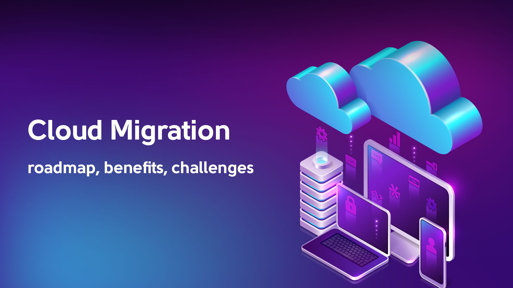

Technical Expertise
Java Ecosystem
Spring Boot | Hibernate | MVC | Microservices
Professional Journey

Associate Manager / Technical Lead
Accenture Inc · Makati, Philippines
2020 - 2022
- Led 9 developers in Spring Boot migration projects
- 20% faster deployments via CI/CD optimization
- Achieved 99.9% uptime through cloud architecture improvements
- Recipient of Accenture Excellence Award

Senior Analyst Programmer
Standard Chartered Bank · Kuala Lumpur, Malaysia
2012 - 2019
- Developed real-time banking systems handling 50k+ daily transactions
- Improved database performance by 15% through query optimization
- Led Octopus Phase 2 project launch ahead of schedule

Technology Consultant II (Senior Developer)
Hewlett Packard Asia Pacific · BGC, Philippines
2012 - 2019
- Led development for Elders Australia's Salesplus Web Application using Java, Spring, and Ruby on Rails
- Developed web applications using MVC architecture, enhancing system functionalities and user experience.
- Collaborated with global teams to deliver projects on time and within budget.
- Integrated RESTful APIs, facilitating seamless communication between systems.
- Utilized cloud services, deploying applications on AWS and OCI, optimizing cloud resources.
- Improved database performance by 15% through query optimization
- Led Octopus Phase 2 project launch ahead of schedule
Key Projects

Legacy System Modernization
Java
Spring Boot
AWS
Docker
Migrated 15+ legacy applications to cloud-native architecture with 35% cost reduction
20% Faster Load Times
99.9% Uptime
Real-Time Online Banking
Java
Spring MVC
Oracle DB
Developed high-performance banking platform supporting 30% user growth
500k+ Users
PCI-DSS Compliant

Secure Student Management
Python
Flask
Oracle
Academic project with role-based access control and audit logging
View Code